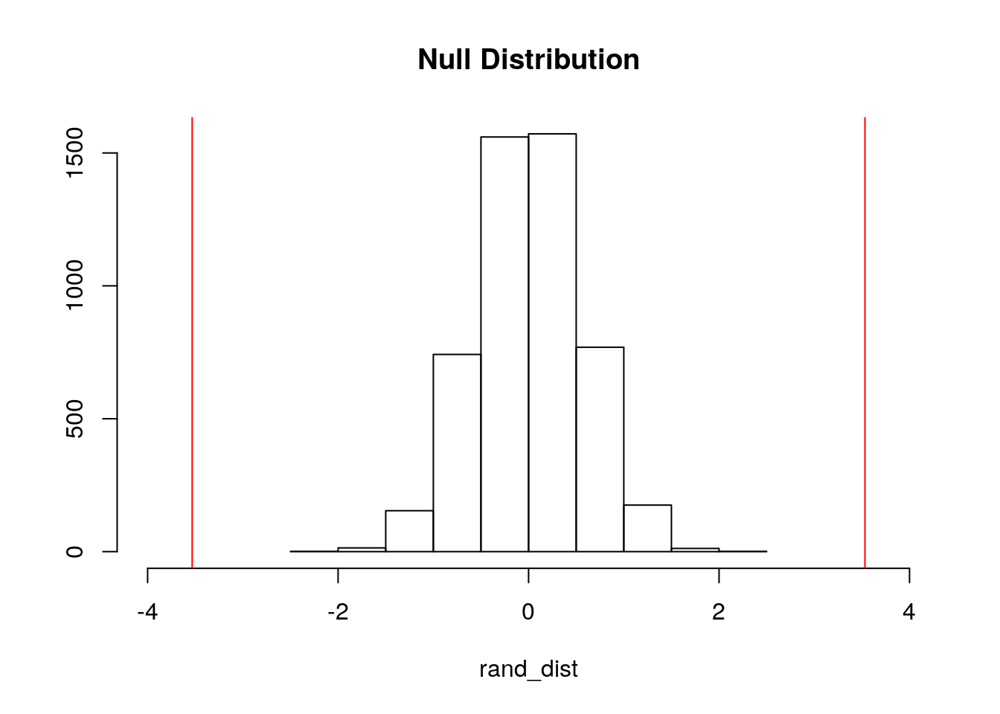
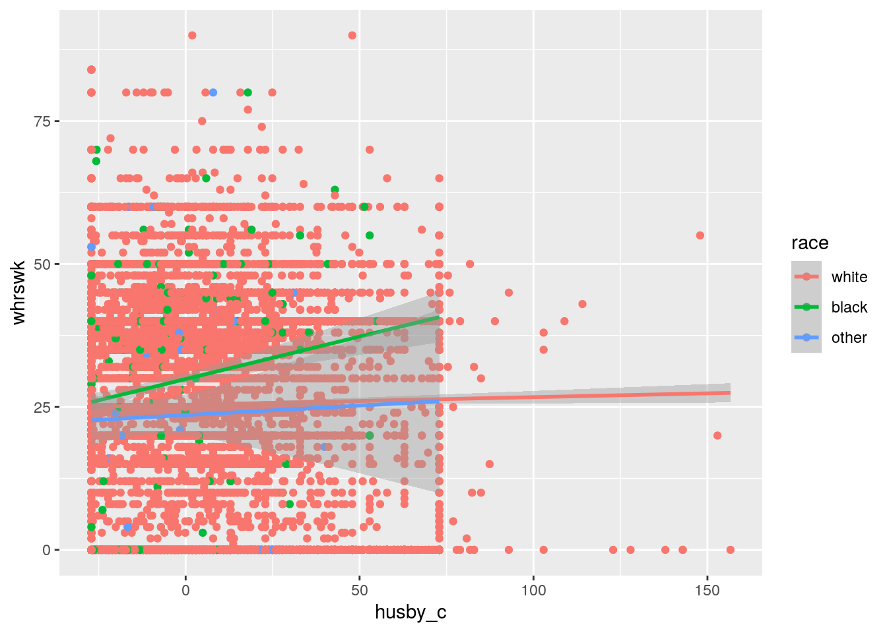
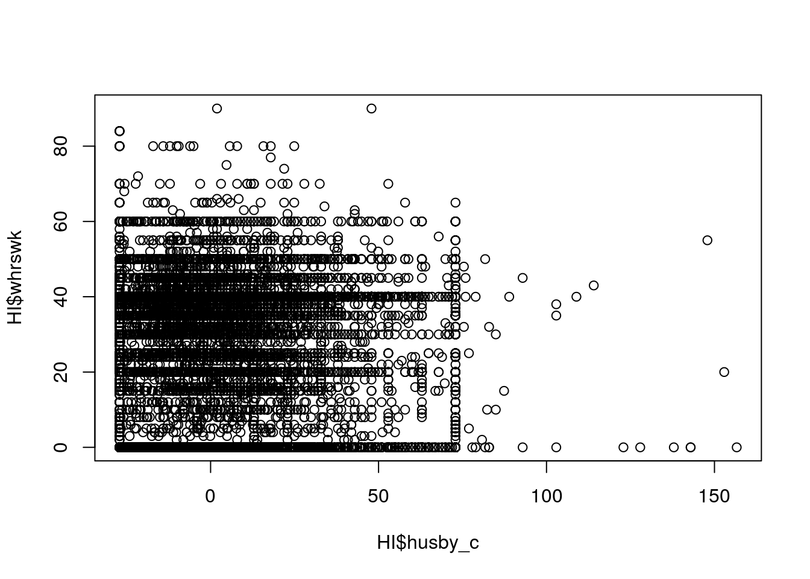
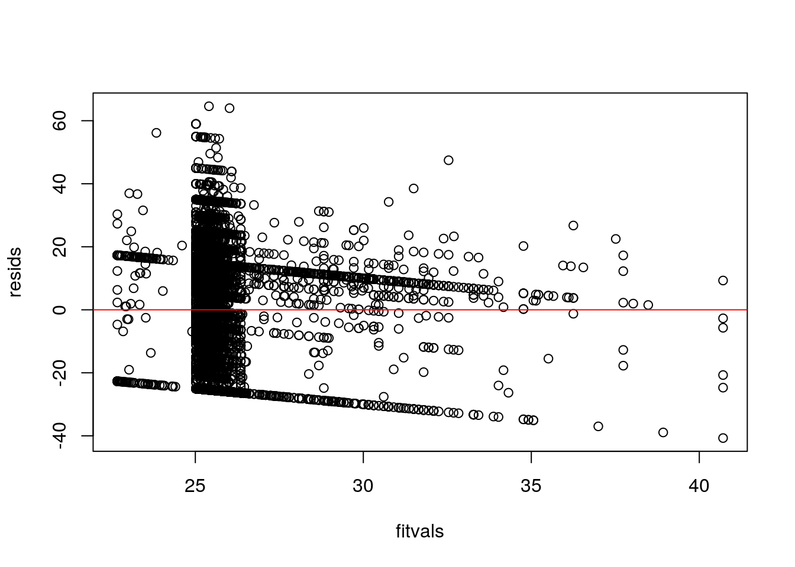
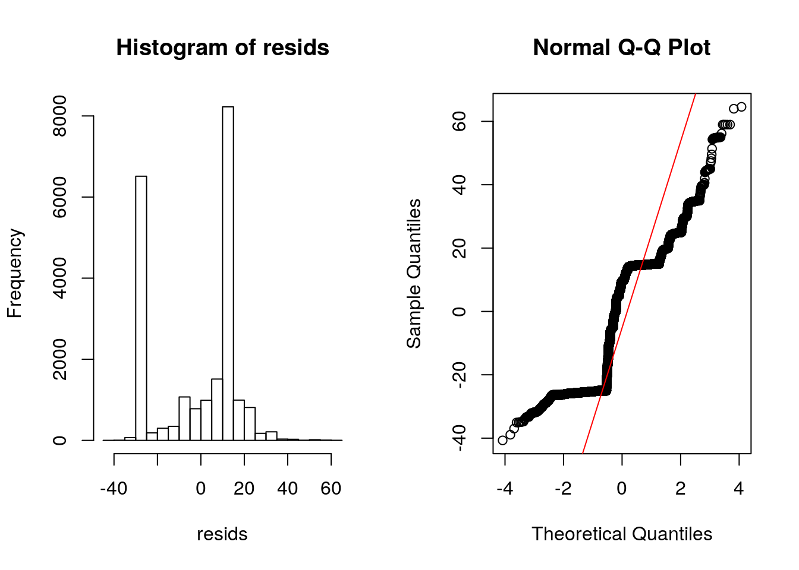
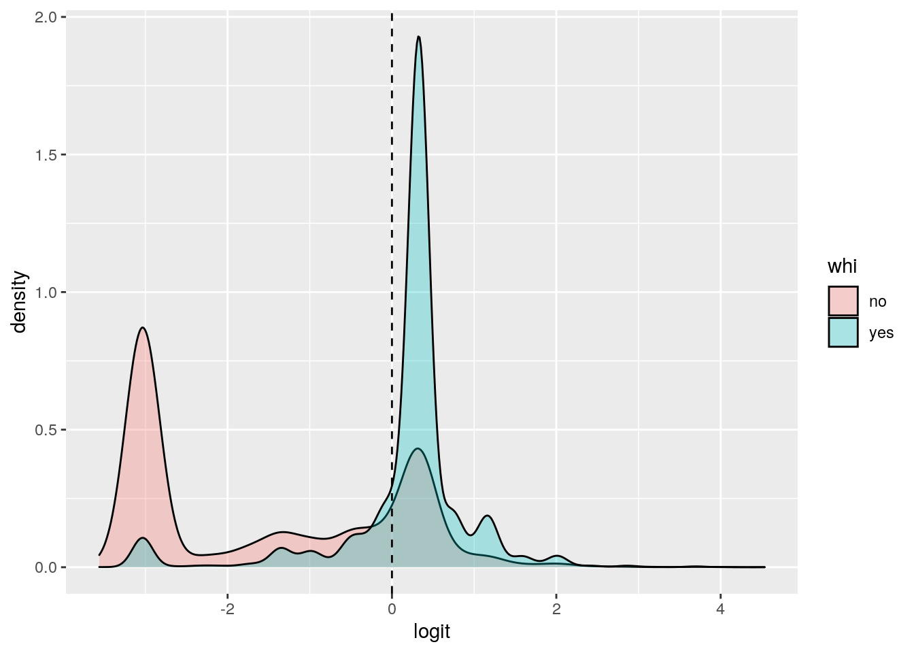
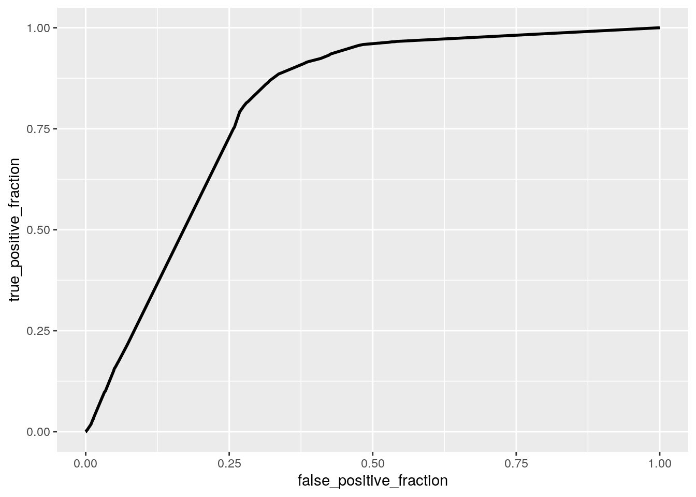
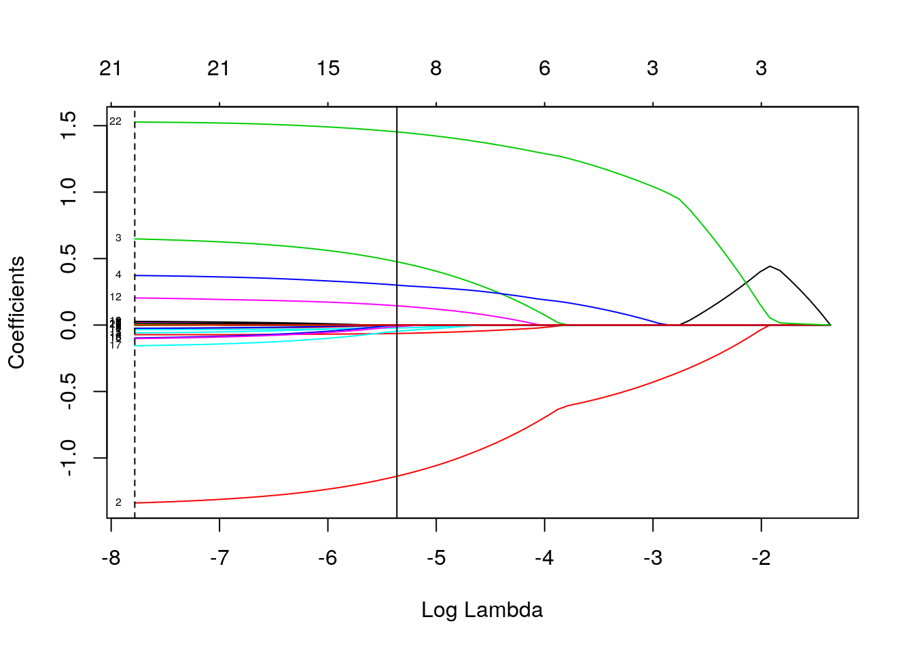

Jocelyn Harnold (jh67282)
My dataset is called HI or Health Insurance and Hours Worked By Wives. The main variables used in this project is whrswk, hhi, whi, hhi2, education, race, hispanic, experience, kidslt6, kids618, husby, and region. The numeric variables include whrswk measures the hours worked per week, experience which states each wife's years of potential work experience, and husby which is the husband's income in thousands of dollars. The numerical varaibles, kidslt6 (number of kids under age of 6) and kids618 (number of kids 6-18 years old) have the class of integer but do not have more than 10 distinct values. The categorical variables include race (one of white, black, or other) and region which states where these wives lived (one of other, northcentral, south, and west). Finally, there are several binary variables included as well, hhi (the wife is coverd by husband's HI/health insurance), whi (wife has HI through her job), hhi2(husband has HI through own job), and hispanic (is the wife Hispanic?). There are 22,272 observations in total in this dataset.
# install.packages('Ecdat')
library(knitr)
library(Ecdat)
library(dplyr)
library(ggplot2)
library(lmtest)
library(car)
library(sandwich)
data()
`?`(Ecdat::HI)
class_diag <- function(probs, truth) {
tab <- table(factor(probs > 0.5, levels = c("FALSE", "TRUE")),
truth)
acc = sum(diag(tab))/sum(tab)
sens = tab[2, 2]/colSums(tab)[2]
spec = tab[1, 1]/colSums(tab)[1]
ppv = tab[2, 2]/rowSums(tab)[2]
if (is.numeric(truth) == FALSE & is.logical(truth) == FALSE)
truth <- as.numeric(truth) - 1
# CALCULATE EXACT AUC
ord <- order(probs, decreasing = TRUE)
probs <- probs[ord]
truth <- truth[ord]
TPR = cumsum(truth)/max(1, sum(truth))
FPR = cumsum(!truth)/max(1, sum(!truth))
dup <- c(probs[-1] >= probs[-length(probs)], FALSE)
TPR <- c(0, TPR[!dup], 1)
FPR <- c(0, FPR[!dup], 1)
n <- length(TPR)
auc <- sum(((TPR[-1] + TPR[-n])/2) * (FPR[-1] - FPR[-n]))
data.frame(acc, sens, spec, ppv, auc)
}
HI <- HI
HI## whrswk hhi whi hhi2 education race hispanic experience kidslt6 kids618
## 1 0 no no no 13-15years white no 13.0 2 1
## 2 50 no yes no 13-15years white no 24.0 0 1
## 3 40 yes no yes 12years white no 43.0 0 0
## 4 40 no yes yes 13-15years white no 17.0 0 1
## 5 0 yes no yes 9-11years white no 44.5 0 0
## 6 40 yes yes yes 12years white no 32.0 0 0
## 7 40 yes no yes 16years white no 14.0 0 0
## husby region wght
## 1 11.960 northcentral 214986
## 2 1.200 northcentral 210119
## 3 31.275 northcentral 219955
## 4 9.000 northcentral 210317
## 5 0.000 northcentral 219955
## 6 15.690 northcentral 208148
## 7 26.000 northcentral 213615
## [ reached 'max' / getOption("max.print") -- omitted 22265 rows ]After performing a MANOVA test, came out as significant (p <0.05) which indicated the need for ANOVA tests to be run. Five ANOVA tests were run and indicated the variables whrswk, kids618, and husby were significant relationship with race. Three t-tests were run for each numeric variable. The t-tests for whrswk and race showed that the the work hours per week for white versus black wives and black versus other race wives differed. The t-tests for kids618 and race showed that all groups differed from each other (before the bonferroni correction was applied). The t-tests for husby and race showed that the husband's income in thousands of dollars differed the groups for white versus black wives and white versus other wives. In total, there were 15 tests done and there is a 53.7% probability of at least 1 type I error. The bonferroni adjusted value was 0.0033 and effectively mad made one post-hoc t-test (HI$kids618 -> black vs other) no longer significant. After running the assumption tests (by the eyeballing method on histograms and qq plots), the first assumption was violated and therefore the others did not need to be tested.
man_HI <- manova(cbind(whrswk, experience, kidslt6, kids618,
husby) ~ race, data = HI) #1 MANOVA
summary(man_HI)## Df Pillai approx F num Df den Df Pr(>F)
## race 2 0.01078 24.132 10 44532 < 2.2e-16 ***
## Residuals 22269
## ---
## Signif. codes: 0 '***' 0.001 '**' 0.01 '*' 0.05 '.' 0.1 ' ' 1summary.aov(man_HI) #5 ANOVA## Response whrswk :
## Df Sum Sq Mean Sq F value Pr(>F)
## race 2 15546 7773.2 22.246 2.23e-10 ***
## Residuals 22269 7781270 349.4
## ---
## Signif. codes: 0 '***' 0.001 '**' 0.01 '*' 0.05 '.' 0.1 ' ' 1
##
## Response experience :
## Df Sum Sq Mean Sq F value Pr(>F)
## race 2 445 222.43 1.642 0.1936
## Residuals 22269 3016592 135.46
##
## Response kidslt6 :
## Df Sum Sq Mean Sq F value Pr(>F)
## race 2 1.2 0.59847 1.3622 0.2561
## Residuals 22269 9783.7 0.43934
##
## Response kids618 :
## Df Sum Sq Mean Sq F value Pr(>F)
## race 2 26.6 13.2895 13.671 1.165e-06 ***
## Residuals 22269 21646.9 0.9721
## ---
## Signif. codes: 0 '***' 0.001 '**' 0.01 '*' 0.05 '.' 0.1 ' ' 1
##
## Response husby :
## Df Sum Sq Mean Sq F value Pr(>F)
## race 2 74286 37143 67.304 < 2.2e-16 ***
## Residuals 22269 12289543 552
## ---
## Signif. codes: 0 '***' 0.001 '**' 0.01 '*' 0.05 '.' 0.1 ' ' 1# total t-tests: 30
pairwise.t.test(HI$whrswk, HI$race, p.adj = "none") #3 t-tests per line (white vs black & black vs other differ)##
## Pairwise comparisons using t tests with pooled SD
##
## data: HI$whrswk and HI$race
##
## white black
## black 1e-10 -
## other 0.1348 0.0002
##
## P value adjustment method: nonepairwise.t.test(HI$kids618, HI$race, p.adj = "none") #3 t-tests per line (all differ)##
## Pairwise comparisons using t tests with pooled SD
##
## data: HI$kids618 and HI$race
##
## white black
## black 0.00046 -
## other 7.7e-05 0.01363
##
## P value adjustment method: nonepairwise.t.test(HI$husby, HI$race, p.adj = "none") #3 t-tests per line (white vs black & white vs other)##
## Pairwise comparisons using t tests with pooled SD
##
## data: HI$husby and HI$race
##
## white black
## black < 2e-16 -
## other 3.3e-09 0.051
##
## P value adjustment method: none1 + 5 + 9 #15 total tests## [1] 15# Probablility of at least 1 Type I error (0.537)
1 - 0.95^15## [1] 0.5367088# boneferroni adjusted = 0.003333333 -> made one post hoc
# t-test (HI$kids618 -> black vs other) no longer significant
0.05/15## [1] 0.003333333# Assumptions
library(rstatix)
group <- HI$race
DVs <- HI %>% select(whrswk, experience, kidslt6, kids618, husby)
DVs_sample <- sample_n(DVs, size = 5000)
DVs #Test multivariate normality for each group (null: assumption met)## whrswk experience kidslt6 kids618 husby
## 1 0 13.0 2 1 11.960
## 2 50 24.0 0 1 1.200
## 3 40 43.0 0 0 31.275
## 4 40 17.0 0 1 9.000
## 5 0 44.5 0 0 0.000
## 6 40 32.0 0 0 15.690
## 7 40 14.0 0 0 26.000
## 8 25 1.0 1 0 0.338
## 9 45 4.0 0 0 10.000
## 10 30 7.0 1 0 30.000
## 11 40 23.0 0 3 18.000
## 12 32 9.0 2 0 22.000
## 13 40 31.0 0 2 19.500
## 14 0 20.0 0 2 42.000
## 15 40 35.0 0 0 32.000
## 16 40 20.0 1 0 25.000
## 17 0 33.0 0 0 42.000
## 18 20 9.0 2 0 16.000
## 19 0 21.0 0 2 0.000
## 20 45 16.0 0 2 36.000
## [ reached 'max' / getOption("max.print") -- omitted 22252 rows ]sapply(split(DVs_sample, group), mshapiro_test)## white black other
## statistic 0.9692945 0.9201053 0.8217774
## p.value 1.606861e-30 3.462303e-11 5.618141e-05`?`(mshapiro_test)
# If any p<.05, stop (assumption violated). If not, test
# homogeneity of covariance matrices
# Box's M test (null: assumption met)
box_m(DVs, group)## # A tibble: 1 x 4
## statistic p.value parameter method
## <dbl> <dbl> <dbl> <chr>
## 1 303. 7.92e-47 30 Box's M-test for Homogeneity of Covariance Matri…# Optionally, view covariance matrices for each group
lapply(split(DVs, group), cov)## $white
## whrswk experience kidslt6 kids618 husby
## whrswk 351.067078 -46.752497 -1.79081698 -0.67831498 7.5652566
## experience -46.752497 136.136912 -3.46740902 -2.17389204 -36.0919625
## kidslt6 -1.790817 -3.467409 0.43788377 -0.01008629 0.3936774
## kids618 -0.678315 -2.173892 -0.01008629 0.95909806 2.1086505
## husby 7.565257 -36.091962 0.39367735 2.10865045 567.6870829
##
## $black
## whrswk experience kidslt6 kids618 husby
## whrswk 314.2119194 -53.392343 -0.65303215 0.46386174 48.42244951
## experience -53.3923429 123.698953 -3.44882411 -2.75546873 -32.88167582
## kidslt6 -0.6530322 -3.448824 0.45316212 0.02299069 0.05141865
## kids618 0.4638617 -2.755469 0.02299069 1.12429362 1.55866171
## husby 48.4224495 -32.881676 0.05141865 1.55866171 325.99908146
##
## $other
## whrswk experience kidslt6 kids618 husby
## whrswk 404.3480564 -48.947265 -0.89848641 -1.72518060 8.5750725
## experience -48.9472652 138.387771 -3.86522188 -3.30665635 -15.8602088
## kidslt6 -0.8984864 -3.865222 0.51750946 0.07822497 -1.1005333
## kids618 -1.7251806 -3.306656 0.07822497 1.45263158 -0.6141235
## husby 8.5750725 -15.860209 -1.10053333 -0.61412353 258.3501300I chose to run a randomization test with the mean difference statistic for race and work hours per week for the dataset. Because race included three categories, I decided to simplify the data and get rid of the most insignificant category, other, to focus on the categories black and white which make up the majority of all the observations.
null hypothesis (H0): Mean hours worked per week is the same for black and white wives alternate hypothesis (HA): Mean hours worked per week is different for black and white wives
The actual mean difference from the dataset is 3.532 hours and is used later as the test statistic to compare the random distribution (null hypothesis). After running the test, the p-value came out as 0 which is less than the significance threshold of 0.05. As a result, the null hypothesis is rejected, meaning that black and white wives work a different mean number of hours per week.
# randomization and t-test for original weight data
HI_no_other <- HI %>% filter(race != "other")
HI_no_other %>% group_by(race) %>% summarize(means = mean(whrswk)) %>%
summarize(mean_diff = diff(means))## # A tibble: 1 x 1
## mean_diff
## <dbl>
## 1 3.53rand_dist <- vector() #create vector to hold diffs under null hypothesis
for (i in 1:5000) {
new <- data.frame(whrswk = sample(HI_no_other$whrswk), race = HI_no_other$race) #scramble columns
rand_dist[i] <- mean(new[new$race == "white", ]$whrswk) -
mean(new[new$race == "black", ]$whrswk)
} #compute mean difference (base R)
mean(rand_dist > 3.532133 | rand_dist < -3.532133) #pvalue: reject H0 because p-value = 0 which is less than 0.05## [1] 0{
hist(rand_dist, main = "Null Distribution", ylab = "", xlim = (c(-4,
4)))
abline(v = c(3.532133, -3.532133), col = "red")
}
Interpreting the coefficients of this regression:
The predicted work hours per week (whrswk) for a white wife with a husband earning an average income is 25.38 hours. Controlling for the husband's income in thousands of dollars, work hours per week is 4.499 hours higher for black wives. Controlling for the husband's income in thousands of dollars, work hours per week is 1.80 hours less for wives of other races (not black or white). Controlling for race, for every one thousand dollar increase in the husband's income, the wife's working hours per week increase by 0.0133 hours. The slope for husband's income on hours worked per week by their wife is .135 greater for black wives compared to white wives. The slope for husband's income on hours worked per week by their wife is .0199 greater for other race wives compared to white wives.
After checking the assumptions, it appears that all of the assumptions are violated. The scatter of points show a patter veering slightly downward and to the right in the plot of fitted values to residuals. Likewise, the histogram and qq plot also do not look normal. Therefore, by just eyballing, all three assumption of linearity, normality, and homoskedasticity seem to be violated. From the coeftest, raceblack, husby_c, raceblack:husby_c are all still sig and there are no changes from before robust SEs. According to the Adjusted R-squared, 0.319% of variablity in hours worked per week by wife is explained by the model.
# centered numeric variable
HI$husby_c <- HI$husby - mean(HI$husby, na.rm = T)
HI$whrswk_c <- HI$whrswk - mean(HI$whrswk, na.rm = T)
# linear regression
fit <- lm(whrswk ~ race * husby_c, data = HI)
summary(fit)##
## Call:
## lm(formula = whrswk ~ race * husby_c, data = HI)
##
## Residuals:
## Min 1Q Median 3Q Max
## -40.708 -25.019 9.462 14.661 64.594
##
## Coefficients:
## Estimate Std. Error t value Pr(>|t|)
## (Intercept) 25.380240 0.129366 196.189 < 2e-16 ***
## raceblack 4.498743 0.577950 7.784 7.33e-15 ***
## raceother -1.801532 1.698842 -1.060 0.2890
## husby_c 0.013326 0.005429 2.455 0.0141 *
## raceblack:husby_c 0.135209 0.029879 4.525 6.06e-06 ***
## raceother:husby_c 0.019865 0.089304 0.222 0.8240
## ---
## Signif. codes: 0 '***' 0.001 '**' 0.01 '*' 0.05 '.' 0.1 ' ' 1
##
## Residual standard error: 18.68 on 22266 degrees of freedom
## Multiple R-squared: 0.003414, Adjusted R-squared: 0.00319
## F-statistic: 15.25 on 5 and 22266 DF, p-value: 5.363e-15# plot of regression with interaction
HI %>% ggplot(aes(husby_c, whrswk, color = race)) + geom_point() +
geom_smooth(method = "lm")
# assumptions
plot(HI$husby_c, HI$whrswk) #does not look linear; most of the values congregated in the bottom left corner
resids <- fit$residuals
fitvals <- fit$fitted.values
plot(fitvals, resids)
abline(h = 0, col = "red") #there is not an even scatter of points and looks not normal (variance)
par(mfrow = c(1, 2))
hist(resids)
qqnorm(resids)
qqline(resids, col = "red") #again; does not look normal with the histogram and qq plot (normality)
# robust SE
coeftest(fit, vcov = vcovHC(fit)) #raceblack, husby_c, raceblack:husby_c are still sig; no changes##
## t test of coefficients:
##
## Estimate Std. Error t value Pr(>|t|)
## (Intercept) 25.3802397 0.1297678 195.5820 < 2.2e-16 ***
## raceblack 4.4987426 0.5388264 8.3492 < 2.2e-16 ***
## raceother -1.8015324 1.9750734 -0.9121 0.36171
## husby_c 0.0133265 0.0058617 2.2735 0.02301 *
## raceblack:husby_c 0.1352091 0.0305219 4.4299 9.472e-06 ***
## raceother:husby_c 0.0198652 0.1086610 0.1828 0.85494
## ---
## Signif. codes: 0 '***' 0.001 '**' 0.01 '*' 0.05 '.' 0.1 ' ' 1# Proportion of variation in outcome -> given by Adjusted
# R-squared 0.319% of variablity in hours worked per week by
# wife is explained by the modelThere actually was not a considerable difference observed between the bootstrapped and original/robust SEs. If anything, the robust SEs seemed to be closer to the bootstrapped SEs.
# here's a way to sample people/rows from your dataset with
# replacement
boot_HI <- sample_frac(HI, replace = T)
# repeat 5000 times
samp_distn <- replicate(5000, {
boot_HI <- sample_frac(HI, replace = T) #take bootstrap sample of rows
fit2 <- lm(whrswk ~ race * husby_c, data = boot_HI) #fit model on bootstrap sample
coef(fit2) #save coefs
})
## Estimated/boostrap SEs
samp_distn %>% t %>% as.data.frame %>% summarize_all(sd) #standard error ## (Intercept) raceblack raceother husby_c raceblack:husby_c
## 1 0.129055 0.5379119 1.954813 0.005798792 0.03052168
## raceother:husby_c
## 1 0.105277The odds of a white wife working an average number of hourse per week having health insurance through her job is -0.885. For wives who work an average number of hours per week, the odds of black wives having health insurance through their jobs is 0.003344 times the odds for white wives. For wives who work an average number of hours per week, the odds of other race wives having health insurance through their jobs is 0.527 times lower than the odds for white wives. For white wives, each one-hour increase in working hours per week increases the odds of a wife having health insurance through their job 0.0841 times.
The confusion matrix is shown below.
The accuracy is 0.755, sensitivity is 0.803, specificity is 0.726, ppv is 0.636, and auc is 0.806. All of these diagnostic values are show to be pretty good. The AUS values is officially categorized as good according to the rule of thumb. After generating the ROC curve and calculating the AUC, the same good AUC of 0.806 was found.
# Logistic Regression
fit1 <- glm(whi ~ race + whrswk_c, data = HI, family = "binomial")
summary(fit1)##
## Call:
## glm(formula = whi ~ race + whrswk_c, family = "binomial", data = HI)
##
## Deviance Residuals:
## Min 1Q Median 3Q Max
## -3.0151 -0.8148 -0.3065 1.0411 2.6794
##
## Coefficients:
## Estimate Std. Error z value Pr(>|z|)
## (Intercept) -0.884585 0.020396 -43.371 < 2e-16 ***
## raceblack 0.003344 0.068313 0.049 0.96096
## raceother -0.526567 0.200722 -2.623 0.00871 **
## whrswk_c 0.084108 0.001305 64.454 < 2e-16 ***
## ---
## Signif. codes: 0 '***' 0.001 '**' 0.01 '*' 0.05 '.' 0.1 ' ' 1
##
## (Dispersion parameter for binomial family taken to be 1)
##
## Null deviance: 29426 on 22271 degrees of freedom
## Residual deviance: 22054 on 22268 degrees of freedom
## AIC: 22062
##
## Number of Fisher Scoring iterations: 5# Predict values
prob <- predict(fit1, type = "response")
# Confusion Matrix
table(predict = as.numeric(prob > 0.5), truth = HI$whi) %>% addmargins## truth
## predict no yes Sum
## 0 10140 1638 11778
## 1 3821 6673 10494
## Sum 13961 8311 22272# Diagnostic Values such as accuracy, TPR, etc.
class_diag(prob, HI$whi)## acc sens spec ppv auc
## yes 0.754894 0.8029118 0.726309 0.6358872 0.805535# Density Plot
HI$logit <- predict(fit1, type = "link") #get predicted log-odds (logits)
HI %>% ggplot(aes(logit, fill = whi)) + geom_density(alpha = 0.3) +
geom_vline(xintercept = 0, lty = 2)
# ROC Curve and AUC
library(plotROC)
ROCplot <- ggplot(HI) + geom_roc(aes(d = whi, m = prob), n.cuts = 0)
ROCplot
calc_auc(ROCplot)## PANEL group AUC
## 1 1 -1 0.805535The accuracy is 0.796, sensitivity is 0.691, specificity is 0.859, ppv is 0.744, and auc is 0.882. Since the model includes all of the variables in the dataset (except one), it is a given that the AUC is considered good and the other diagnostics also appear decent to good. After performing the 10-fold CV, the accuracy is 0.796, sensitivity is 0.691, specificity is 0.859, ppv is 0.744, and auc is 0.883. It is kind of strange that none of these values changed all that much, and the AUC remains in the good territory. After performing LASSO, education.L, hhiyes, hhi2yes, hispanicyes, regionsouth were the the variables retained. Most of these variables had to be modified and made into dummy cariables because only one category out of several were actually significant. Finally, after performing a 10-fold CV on only the variable lasso selected, the AUC calculated was 0.732 which is deemed a fair AUC. This AUC is actually one level lower than the previous logistic regression AUCs because it gets rid of a lot of the flexibility provided to the other logistic regression models with more variables.
# Model and Diagnostics with all variables and interactions
fit4 <- glm(whi ~ (.)^2, data = HI, family = "binomial")
summary(fit4)##
## Call:
## glm(formula = whi ~ (.)^2, family = "binomial", data = HI)
##
## Deviance Residuals:
## Min 1Q Median 3Q Max
## -2.7487 -0.7081 -0.1388 0.6764 3.3689
##
## Coefficients: (62 not defined because of singularities)
## Estimate Std. Error z value Pr(>|z|)
## (Intercept) -4.953e+00 4.025e-01 -12.307 < 2e-16 ***
## whrswk 1.511e-01 8.652e-03 17.463 < 2e-16 ***
## hhiyes -3.095e+00 3.940e-01 -7.854 4.03e-15 ***
## hhi2yes 7.456e-01 3.798e-01 1.963 0.049621 *
## education.L 2.050e+00 5.630e-01 3.641 0.000272 ***
## education.Q -7.283e-02 4.842e-01 -0.150 0.880444
## education.C -3.755e-01 4.194e-01 -0.895 0.370560
## education^4 3.489e-01 3.422e-01 1.020 0.307903
## education^5 -2.858e-01 2.322e-01 -1.231 0.218468
## raceblack -7.379e-01 4.893e-01 -1.508 0.131595
## raceother -1.064e+01 1.018e+02 -0.104 0.916785
## hispanicyes -2.279e-01 4.282e-01 -0.532 0.594613
## experience 6.380e-02 8.897e-03 7.171 7.43e-13 ***
## kidslt6 1.279e-02 1.730e-01 0.074 0.941058
## kids618 -2.023e-01 1.286e-01 -1.573 0.115624
## husby 3.521e-02 6.011e-03 5.858 4.68e-09 ***
## regionnorthcentral -4.868e-01 3.210e-01 -1.517 0.129372
## regionsouth -3.190e-02 3.073e-01 -0.104 0.917339
## regionwest -7.198e-01 3.223e-01 -2.233 0.025535 *
## wght 3.222e-06 1.337e-06 2.409 0.015997 *
## [ reached getOption("max.print") -- omitted 220 rows ]
## ---
## Signif. codes: 0 '***' 0.001 '**' 0.01 '*' 0.05 '.' 0.1 ' ' 1
##
## (Dispersion parameter for binomial family taken to be 1)
##
## Null deviance: 29426 on 22271 degrees of freedom
## Residual deviance: 18225 on 22094 degrees of freedom
## AIC: 18581
##
## Number of Fisher Scoring iterations: 11prob1 <- predict(fit4, type = "response")
class_diag(prob1, HI$whi)## acc sens spec ppv auc
## yes 0.7961117 0.6910119 0.8586777 0.7442976 0.8824769# 10-fold CV
k = 10
data <- HI[sample(nrow(HI)), ] #put dataset in random order
folds <- cut(seq(1:nrow(HI)), breaks = k, labels = F) #create folds
diags <- NULL
for (i in 1:k) {
# FOR EACH OF 10 FOLDS
train <- data[folds != i, ] # CREATE TRAINING SET
test <- data[folds == i, ] # CREATE TESTING SET
truth <- test$whi
fit <- glm(whi ~ ., data = train, family = "binomial")
probs <- predict(fit4, newdata = test, type = "response")
diags <- rbind(diags, class_diag(probs, truth)) #CV DIAGNOSTICS FOR EACH FOLD
}
summarize_all(diags, mean) #AVERAGE THE DIAGNOSTICS ACROSS THE 10 FOLDS## acc sens spec ppv auc
## 1 0.7961117 0.6911694 0.8586772 0.7443135 0.8824996# LASSO
library(glmnet)
HI1 <- HI %>% na.omit() %>% as.matrix()
y <- as.matrix(HI$whi) #grab response
HI_preds <- model.matrix(whi ~ ., data = HI)[, -1] #predictors (drop intercept)
HI_preds <- scale(HI_preds)
cv <- cv.glmnet(HI_preds, y, family = "binomial") #picks an optimal value for lambda through 10-fold CV
# make a plot of the coefficients for different values of
# lambda
{
plot(cv$glmnet.fit, "lambda", label = TRUE)
abline(v = log(cv$lambda.1se))
abline(v = log(cv$lambda.min), lty = 2)
}
head(HI_preds)## whrswk hhiyes hhi2yes education.L education.Q education.C
## 1 -1.3664311 -0.992552 -1.2494429 0.3498931 -0.6007438 -0.8142884
## 2 1.3058442 -0.992552 -1.2494429 0.3498931 -0.6007438 -0.8142884
## 3 0.7713891 1.007459 0.8003208 -0.4941250 -0.6007438 0.7920918
## 4 0.7713891 -0.992552 0.8003208 0.3498931 -0.6007438 -0.8142884
## education^4 education^5 raceblack raceother hispanicyes experience
## 1 0.6208599 1.412467 -0.2429104 -0.08795942 -0.2847963 -0.85437386
## 2 0.6208599 1.412467 -0.2429104 -0.08795942 -0.2847963 0.09071404
## 3 0.6208599 -1.009492 -0.2429104 -0.08795942 -0.2847963 1.72313860
## 4 0.6208599 1.412467 -0.2429104 -0.08795942 -0.2847963 -0.51070553
## kidslt6 kids618 husby regionnorthcentral regionsouth regionwest
## 1 2.4901832 0.3132283 -0.6424396 1.748129 -0.6613925 -0.5264266
## 2 -0.5271369 0.3132283 -1.0991129 1.748129 -0.6613925 -0.5264266
## 3 -0.5271369 -0.7004626 0.1773230 1.748129 -0.6613925 -0.5264266
## 4 -0.5271369 0.3132283 -0.7680672 1.748129 -0.6613925 -0.5264266
## wght husby_c whrswk_c logit
## 1 0.5692632 -0.6424396 -1.3664311 -1.3629346
## 2 0.5155836 -1.0991129 1.3058442 1.3072916
## 3 0.6240677 0.1773230 0.7713891 0.7732464
## 4 0.5177674 -0.7680672 0.7713891 0.7732464
## [ reached getOption("max.print") -- omitted 2 rows ]lasso_fit <- glmnet(HI_preds, y, family = "binomial", lambda = cv$lambda.1se)
coef(lasso_fit)## 23 x 1 sparse Matrix of class "dgCMatrix"
## s0
## (Intercept) -0.897715298
## whrswk .
## hhiyes -1.138076809
## hhi2yes 0.476814866
## education.L 0.300095015
## education.Q -0.006023189
## education.C .
## education^4 .
## education^5 .
## raceblack .
## raceother .
## hispanicyes -0.022116941
## experience 0.144799080
## kidslt6 .
## kids618 -0.063483306
## husby .
## regionnorthcentral .
## regionsouth -0.046551784
## regionwest -0.011872100
## wght .
## husby_c .
## whrswk_c .
## logit 1.453162367# 10-fold CV lasso
k = 10
class(HI_preds)## [1] "matrix"# create dummies for the ranks
HI2 <- HI %>% mutate(education.L = ifelse(HI$education == "L",
1, 0), hhiyes = ifelse(HI$hhi == "yes", 1, 0), hhi2yes = ifelse(HI$hhi2 ==
"yes", 1, 0), hispanicyes = ifelse(HI$hispanic == "yes",
1, 0), regionsouth = ifelse(HI$region == "south", 1, 0))
data1 <- HI2[sample(nrow(HI2)), ] #randomly order rows
folds <- cut(seq(1:nrow(HI2)), breaks = k, labels = F) #create folds
diags <- NULL
for (i in 1:k) {
## Create training and test sets
train <- data1[folds != i, ]
test <- data1[folds == i, ]
truth <- test$whi ## Truth labels for fold i
## Train model on training set (all but fold i)
fit <- glm(whi ~ hhiyes + hhi2yes + education.L + hispanicyes +
experience + kids618 + regionsouth, data = train, family = "binomial")
## Test model on test set (fold i)
probs <- predict(fit, newdata = test, type = "response")
## Get diagnostics for fold i
diags <- rbind(diags, class_diag(probs, truth))
}
summarize_all(diags, mean) #average diagnostics across all k folds## acc sens spec ppv auc
## 1 0.7025413 0.3922255 0.8872854 0.6744706 0.7323987Note that the echo = FALSE parameter was added to the code chunk to prevent printing of the R code that generated the plot.